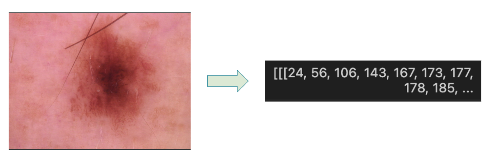
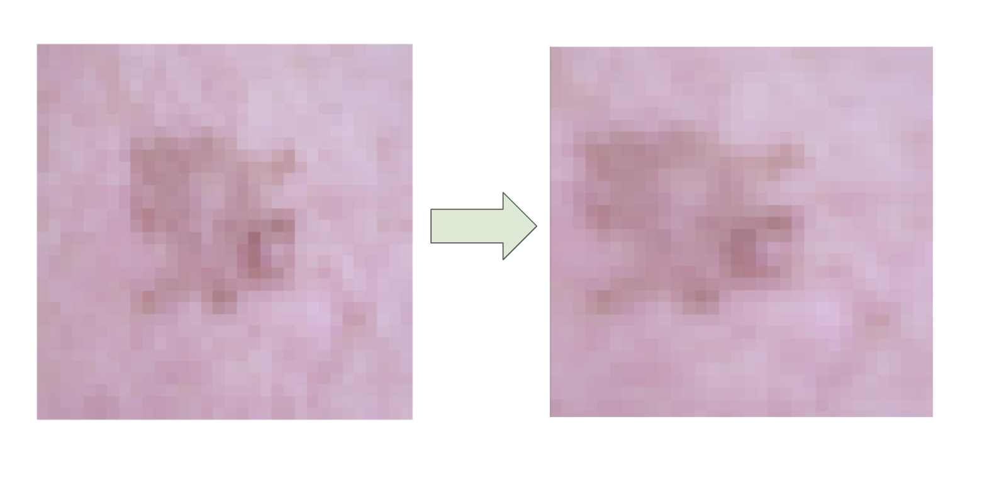
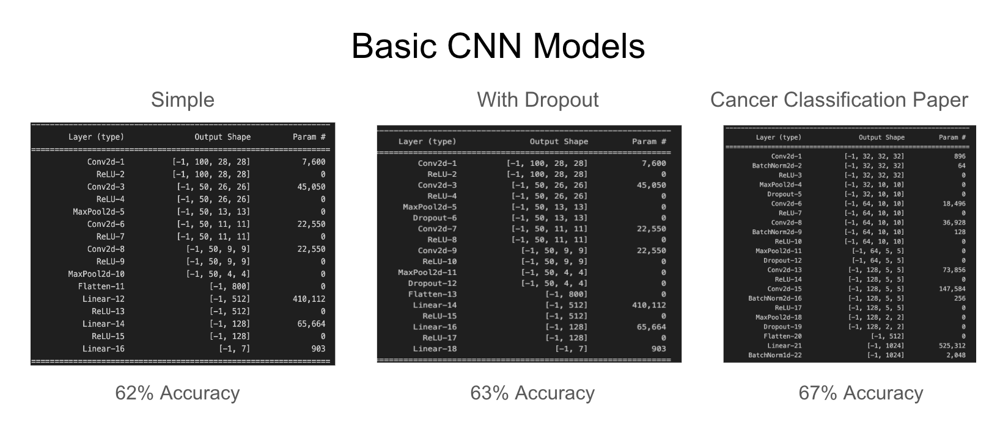
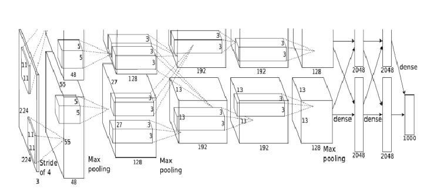

Project Blog Post
On skin cancer identification using CNN and Logistic Regresison models
Abstract
Skin cancer is the most common form of cancer. According to the Victoria department of health, over 95% of skin cancers that are dected early can be successfully treated; therefore, early detection is crucial. In our analyses, we aim to identify different types of skin conditions with image classification techniques. Using convolutional neural networks (CNN) and logistic regression (LR) models, we obtain a 75% accuracy rate for classification, where melanocytic nevi (NV) and melanoma (MEL) are the most successfully classified forms of skin condition.
Link to GitHub Repository: link
Introduction
In 1994, Binder et al. trained a neural network that successfully differentiated between melanomas, the leading cause of skin cancer deaths, and melanocytic nevus, which are generally harmless skin lesions commonly known as moles or birth marks. In 2018, a challenge hosted by the International Skin Imaging Collaboration (ISIC) lay out the task of detection and classification of skin lesions and diseases. 900 parties registered to download the data for the challenge and hundreds of groups submitted novel evaluation techniques to automate the process of diagnosing skin lesions and diseases. A study conducted on the ISIC challenge revealved that the best classification models still failed to properly classify on average over 10% of dermoscopic images and had varying abilities to generalize (Coedlla et al., 2019). As it turns out, Binder et al.’s study (1994) trained their neural network on 200 images. The dataset used by the ISIC challenge is the world’s largest public repository of dermoscopic images of skin and contains 10015 dermoscopic images. First released in 2018 by Philipp Tschandl et al., the HAM10000 (Humans Against Machines) is a novel dataset with the aim of improving the process of automated skin lesion diagnosis, as most existing demoscopic image datasets are either small in size or lacking diversity.
According to a recent study by Tandon et al. (2024), the most successful deep learning model to implement for the automation of cancer diagnoses is the convolutional neural network (CNN). CNNs are a type of neural network that are particularly effective for identifying patterns in images and audio. CNNs are best used when there are large amounts of data to train the model on (MathWorks). Before the release of the HAM10000 dataset, the diversity and size of dermatoscopic images was limited, which also limited the progression of automated skin lesion detection (Tschandl et al. 2024).
In our project, we apply our knowledge of Convolutional Neural Networks (CNN) and other machine learning techniques to the HAM10000 dataset with the goal of classifying types of skin lesions.
Values Statement
We created this model as a way to explore how technologies like convolutional neural networks could be used on a real-world problem. In the state it is in now, we do not recommend using our model as a true diagnosis tool. However, if we were to continue to improve this model to higher accuracy, there is a world in which community members could upload photos of skin lesions and receive a percentage risk score that their skin lesion might benefit from analysis from a professional. That being said, an image would need to be high-quality and under professional lighting to match the image style of the images in HAM10000.
One of the greatest challenges in the healthcare industry is access. Geographical “deserts” exist all across the country where population healthcare needs are unmet partially or totally due to lack of adequate access (Brinzac et al). TeleHealth and WebHealth solutions are aiding these communities; a skin lesion classification algorithm could be used in such services.
The HAM10000 dataset was created to address the issue of small size and lack of diversity in publically available skin cancer datasets. That being said, the images were collected from the Austrian and Australian population, consisting of predominantly white individuals. We have not tested how our algorithm’s results when applied to skin lesions on darker skin tones, but it would likely underperform.
Materials and Methods
Data
For this project, we used the publicly available HAM10000 dataset, found on the Harvard Dataverse (Tschandl, 2023). It includes 10015 dermatoscopic images of skin lesions which were collected over a period of 20 years at two different sites, one in Austria and the other in Australia (Tschandl et al. 2018).

Along with the image data, we used the provided metadata file that contained information such as lesion_id, image_id, dx (diagnosis), dx_type (maligninat or benign), age, sex, localization, dataset.
The limitations of this data were immediately obvious: a vast majority of images were from the “nv” class, and a vast majority of lesions were photographed on white skin.
Figure 1: Frequency of Skin Lesion Categories

This figure shows the frequency of diagnoses present in the data set. Clearly, the nv dx dominates, bringing up questions about how well a model trained on this data will classify any non-nv diagnoses.
Approach
The features of our data were images, which we reduced to a size 32x32 pixels to reduce the strain on our computers. We preprocessed each image by converting it to a 32x32x3 numpy array, where the third channel represents the RGB values of the pixels.
Here is an example image, with the beginning of its numpy array representation: 
The goal was to predict the column of the metadata table labeled dx, the diagnosis corresponding to each lesion. We concatenated the dx column of the metadata onto the dataframe containing the image representations. We subset our data into two sets, 80% for the training set and 20% for the test set.
To artificially increase the size and diversity of our training dataset, we performed various transformations (such as flips, rotations, and image cropping) to the original images – a technique known as Data Augmentation. We also eliminated half of the observations from the nv class to address the unbalanced class sizes. You may notice the example below is a bit blurry, that’s because the images are now 32x32 pixel representations.

Then it was time to create our model! As a baseline, we utilized SkLearn’s Logistic Regression model. We ran this model on our flattened NumPy arrays, achieving a low accuracy of 58%.
To try to improve this result, we turned to Convolutional Neural Network models. First, we tried a minimally connected linear model. Then we added additional ReLU and Conv2D layers to see if the additional layers would improve the accuracy. We also attempted a model with added dropout layers, and a dropout probability of 25%. To prevent the model from predicting the majority class every time (nv), we implemented class weights. After training for 50 epochs, we received mediocre accuracies.

Results
With initial results from simple, self-defined CNNs, we were curious if we could create an even more accurate classification model using transfer learning. Transfer learning is a technique where a pre-trained model, utilizing massive computational power to train on a very large dataset, is adapted to a new but related task with a smaller dataset. The knowledge (parameters and features) learned on the previous task is fine-tuned to the new task.
First, we trained an ImageNet model, as designed by Stanford reserachers in 2009.

As expected, harnessing the power of transfer learning paid off – training for 100 epochs took about 240 minutes but produced an accuracy of about 70% on a validation set! The accuracy steadily increased over the epochs:

Take a look at the confusion matrix:

The model is best at predicting nv; unfortunately, this is a benign skin lesion. It is the majority class in our model, explaining why it is predicted most often. That being said, we see better accuracy with melanoma and benign keratosis than previous models.
With the intention of increasing classification accuracy for melanoma, the most dangerous skin cancer, we utilized mobilenet_v2, Google’s transfer learning model from 2007.

We were able to produce the following results on validation data. When trained for 100 epochs, accuracy this time is 75%!

We see increased accuracy for melanoma, at the expense of melanocytic nevi.
Concluding Discussion
We were able to achieve a 75% accuracy rate, which is a huge improvement over the baseline accuracy of 58%.
While we most certainly did not cure cancer, we met many of our exploration and implementation goals. We gained experience with image processing, data augmentation, class weights, convolutional neural networks, and transfer learning. Our final model has some predictive power, and we were able to explore the HAM10000 dataset in depth.
Our results were within the range of similarly experienced projects using the HAM10000 dataset. However, it is worth noting that one group of researchers was able to achieve an accuracy of 84.3% with an EfficientNet model, which is a more advanced model than the ones we used (Tajerian et al., 2023). Another group achieved an accuracy of 96.15 using Google’s ViT patch-32 model (Himel et al., 2024). Seeing as these groups of researchers had PhDs and we have yet to obtain a Bachelor’s degree, we are content with our results.
If we’d had more time and resources to continue this project, we likely would have explored some of the more advanced models mentioned above, as well as attempted to replicate some of their results. We were also limited by the size of the dataset, which, is relatively small for a machine learning project but is quite large to be processed on a personal laptop. We had to reduce the sizes of the images to achieve a realistic runtime! We would have liked to further explore some of the ethical implications of our model, such as the potential for racial bias in the data and the potential for our model to be used as a diagnostic tool in underserved communities.
Group Contribution Statement
Our group was formed because the topics proposed by Liz and Zoe had similarities regarding classification in the health space. We decided to split the workload so that Liz and Zoe work primarily on the building the convolutional neural network, while Julia and Breanna worked on improving the logistic regression models. For the final blog post, Breanna wrote the abstract, introduction and group contribution statement. Julia summarized the concluding thoughts, Liz wrote the values statement and worked on the results section jointly with Zoe, and Zoe championed the data/methods section.
Personal Reflection
This project turned out to be more challenging than I’d anticipated. Image classification isn’t easy! I set out in blind hope of creating high-accuracy models like we’d found evidence of in scientific papers, but our strongest fell a little short with 75% accuracy. That being said, this is in the range of other results we found online. I do feel proud when I think about what we accomplished. Wrangling complex image data, designing and implementing multiple neural networks, and consistently improving model accuracy … that’s worth celebrating!
Even without the complex problem at hand, working on a team has challenges. I learned the value of getting started early, checking in with group members on their progress, and not being afraid to take a leadership role.
I will take the interpersonal learnings from this group project experience into my next semester and life beyond. I am much more confident now setting ambitious goals and accomplishing them. In a dream world, I hope my career will involve using Artificial Intelligence and Machine Learning to improve health outcomes. This project was a perfect opportunity to dip my toe into this area!
Sources
Binder, M., A. Steiner, M. Schwarz, S. Knollmayer, K. Wolff, and H. Pehamberger. 1994. “Application of an Artificial Neural Network in Epiluminescence Microscopy Pattern Analysis of Pigmented Skin Lesions: A Pilot Study.” British Journal of Dermatology 130 (4): 460–65. https://doi.org/10.1111/j.1365-2133.1994.tb03378.x.
Codella, Noel, Veronica Rotemberg, Philipp Tschandl, M. Emre Celebi, Stephen Dusza, David Gutman, Brian Helba, et al. 2019. “Skin Lesion Analysis Toward Melanoma Detection 2018: A Challenge Hosted by the International Skin Imaging Collaboration (ISIC).” arXiv. https://doi.org/10.48550/arXiv.1902.03368.
Services, Department of Health & Human. n.d. “Melanoma.” Department of Health & Human Services. Accessed May 13, 2024. http://www.betterhealth.vic.gov.au/health/conditionsandtreatments/melanoma.
Himel, Galib Muhammad Shahriar et al. “Skin Cancer Segmentation and Classification Using Vision Transformer for Automatic Analysis in Dermatoscopy-Based Noninvasive Digital System.” International journal of biomedical imaging vol. 2024 3022192. 3 Feb. 2024, doi:10.1155/2024/3022192. https://www.ncbi.nlm.nih.gov/pmc/articles/PMC10858797/.
“Skin Cancer Early Detection.” n.d. Fred Hutch. Accessed May 13, 2024. https://www.fredhutch.org/en/patient-care/prevention/skin-cancer-early-detection.html.
Tajerian, Amin et al. “Design and validation of a new machine-learning-based diagnostic tool for the differentiation of dermatoscopic skin cancer images.” PloS one vol. 18,4 e0284437. 14 Apr. 2023, doi:10.1371/journal.pone.0284437. https://www.ncbi.nlm.nih.gov/pmc/articles/PMC10104315/.
Tandon, Ritu, Shweta Agrawal, Narendra Pal Singh Rathore, Abhinava K. Mishra, and Sanjiv Kumar Jain. 2024. “A Systematic Review on Deep Learning-Based Automated Cancer Diagnosis Models.” Journal of Cellular and Molecular Medicine 28 (6): e18144. https://doi.org/10.1111/jcmm.18144.
Tschandl, Philipp. 2023. “The HAM10000 Dataset, a Large Collection of Multi-Source Dermatoscopic Images of Common Pigmented Skin Lesions.” Harvard Dataverse. https://doi.org/10.7910/DVN/DBW86T.
Tschandl, Philipp, Cliff Rosendahl, and Harald Kittler. 2018. “The HAM10000 Dataset, a Large Collection of Multi-Source Dermatoscopic Images of Common Pigmented Skin Lesions.” Scientific Data 5 (1): 180161. https://doi.org/10.1038/sdata.2018.161.
“What Is a Convolutional Neural Network? | 3 Things You Need to Know.” n.d. Accessed May 13, 2024. https://www.mathworks.com/discovery/convolutional-neural-network.html.
Brinzac, Monica, Kuhlmann, Ellen, Dussault, Gilles. “Defining medical deserts – an international consensus-building exercise.” PubMed, National Center for Biotechnology Information. https://pubmed.ncbi.nlm.nih.gov/37421651/#:~:text=Results%3A%20The%20agreed%20definition%20highlight.